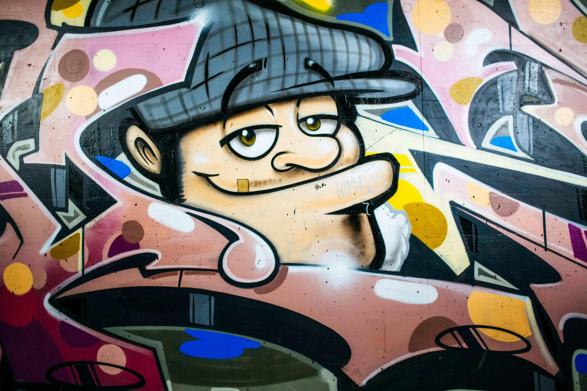

🌙 Donker / Licht
Nederlands
Frans
Engels
Home
Stripmuren
Locatie
Over
Contact
Login

🏜️ Welkom op BrusselsExplorer !
Bekijk onze interessante comic parkours in Brussel.
Ontdek de kleurrijke stripmuurschilderingen die onze stad tot leven brengen.
Strip route
Alle types
Muurschildering
Standbeeld
Sorteer op naam
Sorteer op jaartal